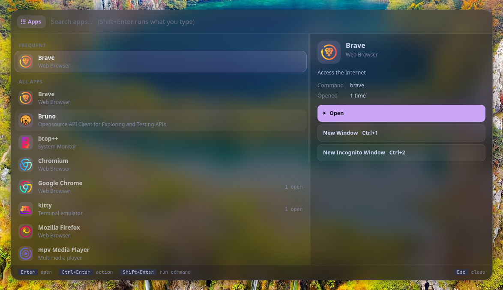
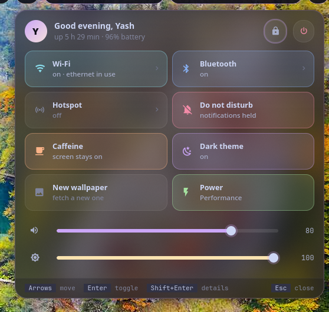
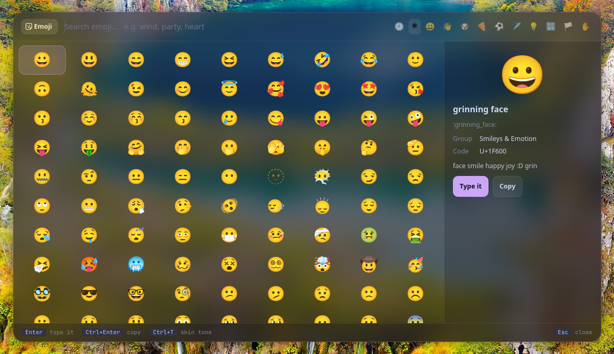

Vyom (व्योम) is Sanskrit for "sky": the space everything sits in.
Vyom replaces wofi in Vayu. Instead of scripts piping text rows into a generic list, each job is a tool: a small plugin with real layouts, live data, previews, toggles and a key for everything. Vyom is what they run in: one resident process with a shared panel, theme and plugin API, so every tool opens instantly and looks the same.
#The tools
Each tool is its own repository, so you install only the ones you want:
| Tool | What it does | |
|---|---|---|
| dvara | द्वार, gateway | app launcher: frequent apps first, app actions, open windows |
| ganit | गणित, mathematics | calculator: answers as you type, units, currency, history |
| smriti | स्मृति, memory | clipboard history: links, images, code told apart; pins |
| bhava | भाव, feeling | emoji: a grid, recents, skin tones; types it for you |
| tarang | तरंग, wave | Wi‑Fi with live signal, inline passwords, and the hotspot |
| setu | सेतु, bridge | Bluetooth: devices with battery, discovery, pairing |
| doot | दूत, messenger | your phone (KDE Connect): battery, send files, ring, browse |
| patra | पात्र, vessel | Docker: containers by project, live CPU/memory, logs |
| suchana | सूचना, notice | notifications: on screen with actions, history, do not disturb |
| raga | राग, melody | YouTube music (into MPD) and video (mpv) |
| mudra | मुद्रा, gesture | keybinding search by what it does; Enter runs it |
| urja | ऊर्जा, energy | battery: charge, time left, health, power profile |
| vishram | विश्राम, rest | power menu: one letter each, countdown with cancel |
| kendra | केन्द्र, centre | quick settings: toggles, sliders, battery, lock, power |
#Install
Requirements: Python 3.11+, PyGObject (with pycairo, for tools that draw), GTK 4, gtk4-layer-shell, a compositor with the layer-shell protocol (sway, Hyprland, river, Wayfire, labwc…), and a Nerd Font for the icons.
# Arch
sudo pacman -S --needed python-gobject python-cairo gtk4 gtk4-layer-shell ttf-jetbrains-mono-nerd
git clone https://github.com/Theyashsawarkar/vyom ~/.local/share/vyom/core
ln -s ~/.local/share/vyom/core/bin/vyom ~/.local/bin/vyom
# then the tools you want, e.g.
git clone https://github.com/Theyashsawarkar/dvara ~/.local/share/vyom/plugins/dvara
git clone https://github.com/Theyashsawarkar/ganit ~/.local/share/vyom/plugins/ganitIn your compositor (sway shown):
exec vyom daemon # start it in the background at login
bindsym $mod+d exec vyom dvara # each tool on its own key; again closes it
bindsym $mod+c exec vyom ganit
layer_effects "vyom" { # SwayFX: blurred glass behind every panel
blur enable
corner_radius 20
shadows enable
}#Usage
vyom <tool> [args] open a tool (e.g. vyom tarang, vyom raga video); again closes it
vyom dmenu [-p PROMPT] [--markup] < lines
pick one line: printed on stdout, exit 1 on Esc (like wofi --dmenu)
vyom list installed tools, and why one is skipped
vyom daemon | reload | quit
vyom quick quick settings (the kendra tool)Vyom keeps one resident process (a GTK single-instance app). Once it's running, vyom <tool> only sends it a D-Bus message, so a panel opens in well under a tenth of a second. vyom dmenu makes any script's picker a Vyom panel: printf 'Accept\nReject\n' | vyom dmenu -p "Pair?".
Every panel: type to search, Up/Down (or Ctrl+K/Ctrl+J) move, Page Up/Page Down jump, Enter runs, Tab switches to the next tool, Esc closes. A tool with tabs shows each tab's number and switches them the same way everywhere: Ctrl+Tab/Ctrl+Shift+Tab (or Ctrl+H/Ctrl+L) for the next/previous tab and Ctrl+1..9 (Ctrl+0: the tenth) by number. Each tool adds its own keys (shown in its footer and README).
| Key | Action |
|---|---|
Up / Down | Move to the previous / next result |
Ctrl+K / Ctrl+J | Move to the previous / next result |
Page Up / Page Down | Jump a page of results |
Enter | Open or run the selected result |
Ctrl+Tab / Ctrl+Shift+Tab | Switch to the next / previous tab (tools with tabs; wraps around) |
Ctrl+H / Ctrl+L | Switch to the previous / next tab (tools with tabs) |
Ctrl+1..9 | Switch to that numbered tab (the number shown on it; Ctrl+0: the tenth) |
Tab / Shift+Tab | Switch to the next / previous Vyom tool |
Esc | Close the panel |
#Configuration
~/.config/vyom/config.toml, all optional (examples/config.toml):
[vyom]
disabled = ["raga"] # installed tools not to load
cycle = ["dvara", "ganit"] # Tab order
width = 900 # every panel opens at this size (times scale = 1.25)
height = 520
opacity = 0.72 # panel background: 1 solid, lower = more glass
css = ["~/.local/state/varna/vyom.css"] # more stylesheets, loaded last (a theme's colours)
[plugin.tarang] # each tool's settings: see its README
hotspot_command = "vayu-hotspot"~/.config/vyom/style.css loads after the tools' styles, to restyle anything; the css files load after that. Colours are named (@base, @text, @accent, @mauve...: Catppuccin Mocha by default), so a theme only has to redefine them: varna writes such a file.
#Writing a tool
A tool is a directory with a plugin.toml and a Python package of the same name exporting a Plugin class:
# plugin.toml
name = "hello"
title = "Hello"
version = "0.1.0"
vyom = "0.2"
icon = "" # Nerd Font glyph for the mode pill
color = "mauve" # sky blue teal red peach mauve yellow green rose lavender
requires = [] # tools it needs; it's skipped (with the reason) without them# hello/__init__.py
from vyom import Hint, Plugin as Base, Row, Section, ui, util
class Plugin(Base):
preview = True # a preview pane on the right
hints = [Hint("Enter", "greet")]
tabs = [("people", "People"), ("places", "Places")] # optional: Ctrl+H/L, Ctrl+1..9
def search(self, query): # runs in a worker thread
return [Section("People"), Row("World", "the usual", icon="", data="world")]
def build_preview(self, row): # main thread
return ui.vbox(ui.title(f"Hello, {row.title}"), ui.meta("a preview"))
def activate(self, row, mods): # Enter; return True to close
util.notify("Hello", row.data)
return TrueLayouts: "list" (rows, sections, preview), "grid" (cells, like the emoji picker) and "card" (build the whole panel in build_card()). See vyom/plugin.py for every hook (tabs with self.tab, tab_changed and select_tab; header_extra, key, opened, closed, live, anchor…), vyom/ui.py for widgets, and any tool repo for a worked example. Put it in ~/.local/share/vyom/plugins/hello (or a directory in $VYOM_PLUGIN_PATH) and vyom reload.
#Troubleshooting
- A tool doesn't open.
vyom listshows every installed tool and why one is skipped (a missing requirement, or a Vyom too old for it). - Something failed. The daemon logs to the journal:
journalctl --user -u vyom -u vyom-daemon -b(without systemd:~/.local/state/vyom/daemon.log); look for aTraceback.vyom quit; vyom <tool>restarts it. - "Failed to initialize layer surface" / panels open as normal windows. gtk4-layer-shell has to load before GTK;
vyom daemondoes this itself throughLD_PRELOAD, so start Vyom withvyom daemon, notpython -m vyom.app. - No blur or rounded corners. That's the compositor's part: on SwayFX use the
layer_effects "vyom"block above; Hyprland:layerrule = blur, vyom. - Icons show as boxes. Install a Nerd Font.
#Contributing
Bug reports, ideas and pull requests are welcome: see CONTRIBUTING.md for the development setup and the API rules, and CHANGELOG.md for what changed in each release. A problem with one tool belongs in that tool's repository. Please report security issues privately (SECURITY.md).